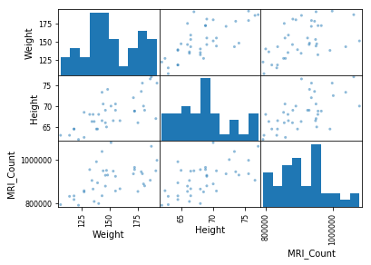
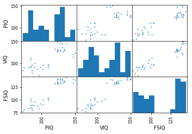
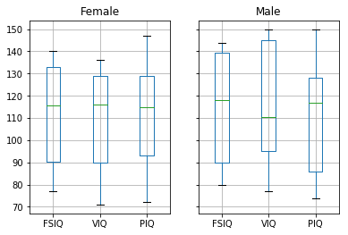
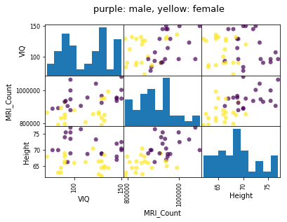

# 필요한 라이브러리를 불러옵니다.
%matplotlib inline
import pandas as pd
import matplotlib.pyplot as plt파이썬 통계분석하기
python
statstics
왜 파이썬으로 통계분석을 하나요?
통계 계산을 위한 프로그래밍 언어에 R 프로그래밍 언어(줄여서 R)가 있는데, 왜 파이썬을 써야 할까요?
R은 문법 자체부터 통계에 특화되어 있고 여러가지 통계분석을 할 수 있습니다. 그럼에도 불구하고 제가 파이썬을 통계분석에 사용하는 이유는 간단합니다. 파이썬은 보다 범용적인 언어이고 라이브러리가 풍부해서 제가 원하는 기능은 거의 이미 다 있기 때문이죠.
예를 들어봅시다.
여기, brain_size 라는 데이터를 살펴 보겠습니다.
CSV 파일 읽어오기
brain_size 데이터는 Willerman이 1991년에 사람의 뇌 크기와 무게, 그리고 IQ에 대하여 측정한 값입니다. 범주형의 데이터와 수치형 데이터로 구성 되어 있죠.
Pandas의 read_csv 기능을 이용해 데이터프레임을 만들어 보겠습니다.
df = pd.read_csv(
"http://www.scipy-lectures.org/_downloads/brain_size.csv",
sep=";",
index_col=0,
na_values=".",
)
df.head() # 상단의 5개의 데이터 확인하기| Gender | FSIQ | VIQ | PIQ | Weight | Height | MRI_Count | |
|---|---|---|---|---|---|---|---|
| 1 | Female | 133 | 132 | 124 | 118.0 | 64.5 | 816932 |
| 2 | Male | 140 | 150 | 124 | NaN | 72.5 | 1001121 |
| 3 | Male | 139 | 123 | 150 | 143.0 | 73.3 | 1038437 |
| 4 | Male | 133 | 129 | 128 | 172.0 | 68.8 | 965353 |
| 5 | Female | 137 | 132 | 134 | 147.0 | 65.0 | 951545 |
간단히 살펴보면, 총 40명의 사람들의 성별, IQ, 몸무게, 키 그리고 MRI_count(total pixel Count from the 18 MRI scans) 값이 측정되어 있습니다. IQ의 경우 3종류로 세분화 되어있는데 각각을 알아 보면 아래와 같습니다.
- Full Scale Intelligence Quotient (FSIQ) : VIQ와 PIQ의 종합적인 수치입니다
- Verbal IQ (VIQ) : 언어적인 측면을 측정합니다.
- Performance IQ (PIQ) : 논리, 계산적인 측면을 측정
Pandas 설명통계
pandas에서는 간단하게 평균값과 표준편차등을 계산해주는 기능이 있습니다.
describe() 함수를 사용하면 모든 열에 대한 설명통계값을 보여줍니다.
# padas 에서 제공하는 설명 통계
df.describe()| FSIQ | VIQ | PIQ | Weight | Height | MRI_Count | |
|---|---|---|---|---|---|---|
| count | 40.000000 | 40.000000 | 40.00000 | 38.000000 | 39.000000 | 4.000000e+01 |
| mean | 113.450000 | 112.350000 | 111.02500 | 151.052632 | 68.525641 | 9.087550e+05 |
| std | 24.082071 | 23.616107 | 22.47105 | 23.478509 | 3.994649 | 7.228205e+04 |
| min | 77.000000 | 71.000000 | 72.00000 | 106.000000 | 62.000000 | 7.906190e+05 |
| 25% | 89.750000 | 90.000000 | 88.25000 | 135.250000 | 66.000000 | 8.559185e+05 |
| 50% | 116.500000 | 113.000000 | 115.00000 | 146.500000 | 68.000000 | 9.053990e+05 |
| 75% | 135.500000 | 129.750000 | 128.00000 | 172.000000 | 70.500000 | 9.500780e+05 |
| max | 144.000000 | 150.000000 | 150.00000 | 192.000000 | 77.000000 | 1.079549e+06 |
IQ의 평균값은 113이군요. 몸무게는 kg으로 변환하면 약 70kg쯤 됩니다.
산포 행렬을 그려보겠습니다.
전체적인 데이터의 양상을 보기에는 시각화가 중요합니다. 파이썬에서는 간단하게 산포 행렬(sactter matrix)를 그려 볼 수 있습니다.
먼저 키와 몸무게, MRI_count 간의 상관관계를 보겠습니다.
# Plotting data
from pandas.plotting import scatter_matrix
# 키와 몸무게, MRI_count
scatter_matrix(df[["Weight", "Height", "MRI_Count"]])array([[<matplotlib.axes._subplots.AxesSubplot object at 0x000000000A1D2B70>,
<matplotlib.axes._subplots.AxesSubplot object at 0x000000000A443668>,
<matplotlib.axes._subplots.AxesSubplot object at 0x000000000A47E588>],
[<matplotlib.axes._subplots.AxesSubplot object at 0x000000000A4B9588>,
<matplotlib.axes._subplots.AxesSubplot object at 0x000000000A56D4A8>,
<matplotlib.axes._subplots.AxesSubplot object at 0x000000000A56D4E0>],
[<matplotlib.axes._subplots.AxesSubplot object at 0x000000000A5DC978>,
<matplotlib.axes._subplots.AxesSubplot object at 0x000000000A614EB8>,
<matplotlib.axes._subplots.AxesSubplot object at 0x000000000A643B70>]], dtype=object)
키와 몸무계는 서로 연관이 있는듯 하고 나머지는 그다지 서로 연관이 없어 보입니다.
그 다음으로는 여러 IQ 수치간에 상관관계를 알아 보죠.
scatter_matrix(df[["PIQ", "VIQ", "FSIQ"]])array([[<matplotlib.axes._subplots.AxesSubplot object at 0x000000000A9AD6A0>,
<matplotlib.axes._subplots.AxesSubplot object at 0x000000000A9F34A8>,
<matplotlib.axes._subplots.AxesSubplot object at 0x000000000AA2E3C8>],
[<matplotlib.axes._subplots.AxesSubplot object at 0x000000000AA64358>,
<matplotlib.axes._subplots.AxesSubplot object at 0x000000000AAA0358>,
<matplotlib.axes._subplots.AxesSubplot object at 0x000000000AAA0390>],
[<matplotlib.axes._subplots.AxesSubplot object at 0x000000000AB01EB8>,
<matplotlib.axes._subplots.AxesSubplot object at 0x000000000AB3DEB8>,
<matplotlib.axes._subplots.AxesSubplot object at 0x000000000AB72EB8>]], dtype=object)
당연하지만, FSIQ는 VIQ, PIQ 각각과 연관성이 있어 보입니다. VIQ와 PIQ간에는 애매하게 연관성이 없어 보이네요. FSIQ의 히스토그램에서는 100 - 125 사이에는 데이터가 없는 것을 확인 할 수 있습니다.
가설 검정: 두 그룹간의 비교
T-test 는 두 그룹간의 평균의 차이가 통계적으로 의미가 있는지를 알아볼때 사용됩니다.T-test에는 다음과 같이 세 종류가 있습니다.
- 1-sample T-test
- 2-sample T-test
- paired T-test
여기서는 간단한 가설 검정 방법으로 scipy의 scipy.stats 라이브러리를 사용해, 1-sample, 2-sample T-test를 해보겠습니다.
각각의 T-test는 사용되는 경우가 다르기에 주의 해야 합니다.
1-sample T-test
하나의 집단의 평균이 특정 기준보다 유의미하게 다른지 를 알아보는 분석 방법입니다. Student T-test이라고도 하는 1-sample T-test 를 사용하려면 scipy.stats.ttest_1samp() 함수를 사용하면 됩니다.
from scipy import stats## Student’s t-test: the simplest statistical test
stats.ttest_1samp(df["VIQ"], 0)
# VIQ의 평균값이 0과 통계적으로 유의미하게 다른지 알아 보겠습니다.Ttest_1sampResult(statistic=30.088099970849328, pvalue=1.3289196468728067e-28)간단하게 결론만 말하자면, p-value가 아주 낮음(10의 -28제곱) 으로 VIQ의 평균은 0이 아니라고 말할 수 있습니다.
2-sample t-test
서로 다른 두개의 그룹 간 평균의 차이가 유의미 한지 여부를 판단하기 위해 시행합니다. 2-sample t-test 는 scipy.stats.ttest_ind(): 함수를 사용합니다.
예를 들어 여자의 VIQ와 남자의 VIQ의 평균은 통계적으로 차이가 있는지 알아 보겠습니다.
# 여자의 VIQ
female_viq = df[df["Gender"] == "Female"]["VIQ"]
# 남자의 VIQ
male_viq = df[df["Gender"] == "Male"]["VIQ"]
# 두개의 리스트를 가지고 t-test실행
stats.ttest_ind(female_viq, male_viq)Ttest_indResult(statistic=-0.77261617232750113, pvalue=0.44452876778583217)p-value가 0.44로 아주 높게 나왔습니다. 따라서 기무가설이었던 남자와 여자의 VIQ 평균에는 차이가 있다. 는 기각되고 차이가 없다 라고 결론을 낼 수 있습니다.
Paired tests:
Paired t-test는 동일한 집단에서의 반복적인 측정에 의한 차이를 비교하기 위해 사용됩니다. 예를 들면 커피가 수면시간에 미치는 영향을 보기 위해 커피를 마시지 않고 측정하고 커피를 마시고 측정한 데이터를 수집하여 사용합니다. > 전제조건을 충족하기 위해서는 실험이 길어지는 단점이 있습니다
brain_size 데이터의 T-test
주어진 brain_size 데이터에서 3가지 IQ수치 PIQ, VIQ, FSIQ가 제공 되고 있는데, FSIQ 평균 값과 PIQ 평균이 통계적으로 차이가 있는지 알아 보도록 하겠습니다. 이를 위해서 2-sample T-test를 수행하겠습니다.
먼저, 전체적인 데이터의 모습을 알기 위한 boxplot을 그려보겠습니다.
# Box plots of different columns for each gender
groupby_gender = df.groupby("Gender")
groupby_gender.boxplot(column=["FSIQ", "VIQ", "PIQ"])Female AxesSubplot(0.1,0.15;0.363636x0.75)
Male AxesSubplot(0.536364,0.15;0.363636x0.75)
dtype: object
# 2-sample t-test
stats.ttest_ind(df["FSIQ"], df["PIQ"])Ttest_indResult(statistic=0.46563759638096403, pvalue=0.64277250094148408)T-test 결과 p-value가 0.64로 매우 높기 때문에 기무가설을 기각하지 못합니다. 따라서, FSIQ와 PIQ값에 통계적으로 유의적인 차이는 없다고 볼 수 있습니다.
여기서 한가지 문제 점이 있는데, 각각의 FSIQ와 PIQ값은 같은 개인에서 측정되었기 때문에, paried T-test 으로 추가적인 확인이 필요합니다.
stats.ttest_rel(df["FSIQ"], df["PIQ"])
# This is equivalent to a 1-sample test on the difference:
# stats.ttest_1samp(df['FSIQ'] - df['PIQ'], 0)Ttest_relResult(statistic=1.7842019405859857, pvalue=0.082172638183642358)Paired T-test결과에서도 p-value 값이 0.05 이상임으로 통계적으로 유의미한 차이가 없다고 볼 수 있습니다.
성별과 VIQ 수치의 관계
남성과 여성이 VIQ 차이가 있는지를 판단하기 위해서는 뇌의 크기, 키, 몸무게에 의한 영향을 배제해야 합니다. 이를 위해서는 statsmodels 라이브러리에서 제공하는 ols(ordinary least squares)모델을 사용하겠습니다. 그런 다음 F-test을 통해 통계적 유의성을 보겠습니다.
F-test
F-test는 두 표본의 분산에 대한 차이가 통계적으로 유의한가를 판별하는 검정기법입니다. 다른 이름으로 var-test로도 불립니다.
from statsmodels.formula.api import ols
model = ols("VIQ ~ Gender + MRI_Count + Height", df).fit()
print(model.summary())
print(model.f_test([0, 1, 0, 0])) OLS Regression Results
==============================================================================
Dep. Variable: VIQ R-squared: 0.246
Model: OLS Adj. R-squared: 0.181
Method: Least Squares F-statistic: 3.809
Date: Thu, 21 Dec 2017 Prob (F-statistic): 0.0184
Time: 15:34:54 Log-Likelihood: -172.34
No. Observations: 39 AIC: 352.7
Df Residuals: 35 BIC: 359.3
Df Model: 3
Covariance Type: nonrobust
==================================================================================
coef std err t P>|t| [0.025 0.975]
----------------------------------------------------------------------------------
Intercept 166.6258 88.824 1.876 0.069 -13.696 346.948
Gender[T.Male] 8.8524 10.710 0.827 0.414 -12.890 30.595
MRI_Count 0.0002 6.46e-05 2.615 0.013 3.78e-05 0.000
Height -3.0837 1.276 -2.417 0.021 -5.674 -0.494
==============================================================================
Omnibus: 7.373 Durbin-Watson: 2.109
Prob(Omnibus): 0.025 Jarque-Bera (JB): 2.252
Skew: 0.005 Prob(JB): 0.324
Kurtosis: 1.823 Cond. No. 2.40e+07
==============================================================================
Warnings:
[1] Standard Errors assume that the covariance matrix of the errors is correctly specified.
[2] The condition number is large, 2.4e+07. This might indicate that there are
strong multicollinearity or other numerical problems.
<F test: F=array([[ 0.68319608]]), p=0.4140878441244722, df_denom=35, df_num=1>F test 결과, p-value 가 0.41로 아주 높게 나왔습니다. 따라서 기무가설을 기각하지 못합니다. 다시 말해 성별에 의한 VIQ 차이는 없다 라고 할 수 있습니다.
시각화
시각화를 하면 통계분석에 사용된 변수간의 상관관계를 손쉽게 확인할 수 있습니다. 아래 코드는 scatter_matrix를 그리는 방법입니다.
# This plotting is useful to get an intuitions on the relationships between
# our different variables
# Fill in the missing values for Height for plotting
df["Height"].fillna(method="pad", inplace=True)
# The parameter 'c' is passed to plt.scatter and will control the color
# The same holds for parameters 'marker', 'alpha' and 'cmap', that
# control respectively the type of marker used, their transparency and
# the colormap
scatter_matrix(
df[["VIQ", "MRI_Count", "Height"]],
c=(df["Gender"] == "Female"),
marker="o",
alpha=0.7,
)
fig = plt.gcf()
fig.suptitle("purple: male, yellow: female", size=13)
plt.show()
결론
시각화와 F-test 결과를 통해 성별은 VIQ값에 아무런 상관관계를 가지고 있지 않다는 것을 확인 할 수 있었습니다.